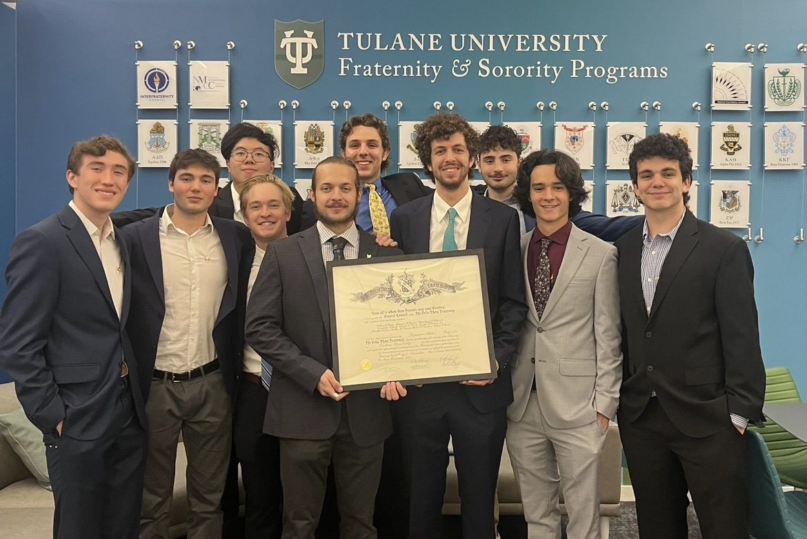

About Us
Overview
Founded in 1848 by a visionary group called the Immortal Six, Phi Delta Theta has long been known for thinking differently about what it means to be a Greek organization and its impact on the greater society. Phi Delta Theta has remained faithful to its original three Cardinal Principles while also evoking a culture of innovation and fearlessness, pursuing greatness in the lifelong journey of members. Helping every individual to meet his true potential is the bedrock of the Phi Delta Theta Fraternity. By celebrating each person’s true self, and by learning from each other’s strengths while helping to improve each other’s weaknesses, every member of Phi Delta Theta develops into a greater version of himself than he could ever on his own.

History
On a cold winter night in 1848, the Immortal Six gathered in Miami, Ohio, where they decided to establish a lifelong friendship through the bonds of brotherhood. They chose to name this brotherhood Phi Delta Theta. Over time, Phi Delta Theta would become present on many college campuses. In 1889, Tulane University became one of these, and the Louisiana Alpha chapter was born. Today, Phi Delta Theta has over 190 chapters accross the United States and Canada. In November 2023, the Louisiana Alpha chapter of Phi Delta Theta recieved its charter and was re-installed. Today, we have 56 initiated brothers and are projected to have 83 by the end of the Spring 2024 semester, making us the second largest fraternity on campus.

Values
Friendship
If you ask our members what they have received from their Phi Delta Theta membership, you’ll often hear about an experience filled with brotherhood and mutual respect. Great friendships are a crucial component of living well, and Phi Delta Theta challenges its members to create long-term and meaningful relationships with each other that stand the test of time. Through the ups and downs of life, relationships built through fraternity offer our members a strong foundation, network, and support structure.
Sound Learning
Sound Learning is much more than getting good grades. It’s about intellectual curiosity and the search for truth. It’s about well-roundedness and becoming cultured in all aspects of life. Phi Delta Theta challenges its members to live a life of continuous learning, and we invest in educational experiences that offer new dimensions of knowledge that may not be taught in the classroom, such as soft skills, work ethic, leadership, and compassion for others.
Rectitude
Rectitude can be defined in many ways, but the Fraternity resonates with its qualities of honesty, integrity, character, kindness, and compassion. As men of strong moral character, we are called to exemplify the principles upon which we were founded and that we, as Phi Delts, swear to uphold. Though all our principles are considered equal, Rectitude is what guides us into becoming the greatest versions of ourselves.